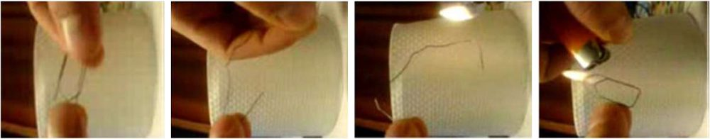
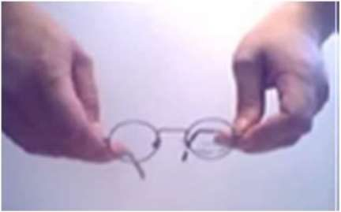
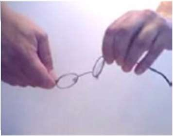
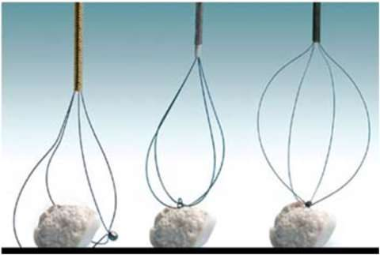
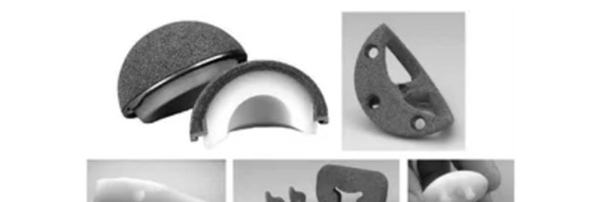

NiTi à mémoire de forme et tantale
Une agrafe qu'on pose ouverte et qui se referme toute seule à la chaleur du corps. Un stent plié dans un cathéter qui reprend sa forme dans l'artère. Une pièce métallique aussi poreuse que l'os spongieux. Deux métaux étonnants : le NiTi et le tantale.
Intuition
Le NiTi peut exister sous deux arrangements d'atomes. À chaud, l'austénite, rigide et bien ordonnée, qui garde « en mémoire » la forme de départ. À froid, la martensite, dont les atomes peuvent basculer d'une orientation à l'autre : on la déforme facilement, et la déformation reste. Réchauffe-la au-dessus d'une certaine température, elle redevient austénite et reprend sa forme.
Formalisation
Les alliages à mémoire de forme NiTi (Nitinol)
Alliage nickel-titane à presque 50 % - 50 %, biocompatible. Sa microstructure a deux états de phase solide : l'austénite et la martensite. Remarque : la diapositive écrit que la martensite est la phase de haute température et l'austénite celle de basse température ; c'est l'inverse, comme le montre la suite du même cours (on retrouve l'austénite en chauffant au-dessus de \(A_f\)). Par refroidissement, l'austénite donne une martensite non orientée (maclée) ; sous chargement, on obtient une martensite orientée.
L'effet mémoire de forme : l'aptitude d'un échantillon déformé à l'état martensitique à retrouver sa forme initiale à l'état austénitique, par chauffage au-dessus de la température « austénite finish » \(A_f\). Les étapes :
- martensite auto-accommodante au départ ;
- une contrainte fait progresser les variantes de martensite qui accommodent le mieux la déformation ;
- jusqu'à une déformation maximum ;
- la contrainte cesse : une faible partie seulement de la déformation est recouvrée, il reste une déformation permanente (la martensite est stable à cette température) ;
- chauffage à contrainte nulle au-dessus de \(A_f\) : transformation inverse complète, retour en austénite, la forme initiale revient ;
- retour à température ambiante sans contrainte : la martensite se reforme, sans changer la forme. C'est l'effet simple sens.

L'effet double sens : l'austénite se transforme en martensite orientée par simple refroidissement, sans chargement ; la pièce change de forme dans les deux sens avec la température. L'effet superélastique : à température constante, une grande déformation sous contrainte disparaît quand on relâche (la monture de lunettes qu'on tord et qui revient).


Quatre catégories de fonctions : mémoire de forme libre (mouvements ou déformations jusqu'à 8 %) ; mémoire de forme sous contrainte (la déformation est empêchée, d'où des efforts importants) ; actionneurs (mouvement avec effort, jusqu'à 5 J par gramme) ; applications superélastiques (isothermes, stockage d'énergie).
Applications : plaques de fixation et agrafes d'ostéotomie, agrafes de correction de la scoliose, tige de Harrington, stents, pinces et pinces-paniers, arcs d'appareils dentaires.
Le tantale (Ta)
- biocompatible : faible cytotoxicité, excellente résistance à la corrosion grâce à l'oxyde \(\mathrm{Ta_2O_5}\) stable formé en surface ; ne réagit pas avec les fluides corporels ;
- métal réfractaire, fusion à 3017 °C ; très dur et très ductile (phase α cubique à faces centrées) ;
- densité élevée (16,4 à 16,69 g/cm³), ce qui le limite à quelques applications : fils de suture, clips, agrafes ;
- le tantale poreux ressemble à l'os spongieux : porosité de 75 à 85 %, faible rigidité (module de 2,5 à 3,9 GPa), coefficient de frottement élevé (0,82 à 1,75) ; cela réduit le stress-shielding et permet une mise en charge immédiate ; testé comme substitut de greffe osseuse et en arthroplastie sans ciment de la hanche et du genou ;
- ostéocompatibilité semblable à celle des dispositifs en titane.


Exemple
Exemple ajouté. Un fil de NiTi de 50 mm utilisé en mémoire de forme libre peut changer de longueur de \(0{,}08 \times 50 = 4\) mm au plus. Un actionneur de 2 g peut fournir jusqu'à \(5 \times 2 = 10\) J. Une cale en tantale poreux à 80 % : seuls 20 % de son volume sont du métal, ce qui explique sa faible rigidité malgré la densité du tantale.
Formules clés
NiTi ≈ 50/50 ; austénite (chaud, forme mémorisée) et martensite (froid, déformable).
Simple sens : déformer en martensite, chauffer au-dessus de \(A_f\), la forme revient. Double sens : change de forme au chauffage et au refroidissement. Superélastique : revient au relâchement, à température constante.
Mémoire libre jusqu'à 8 % ; actionneur jusqu'à 5 J/g.
Tantale : \(\mathrm{Ta_2O_5}\), 3017 °C, 16,4 à 16,69 g/cm³ ; poreux 75 à 85 %, E = 2,5 à 3,9 GPa.